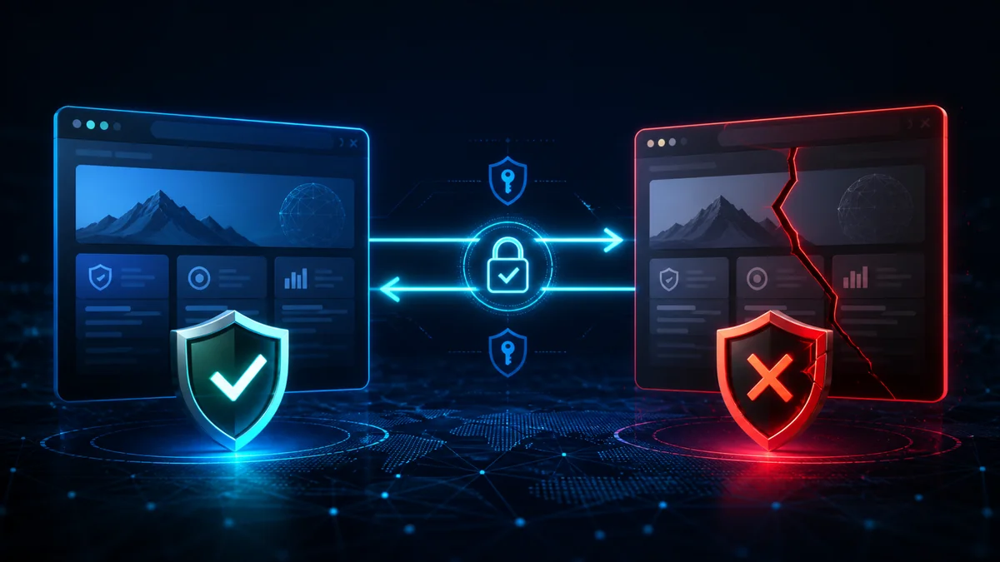
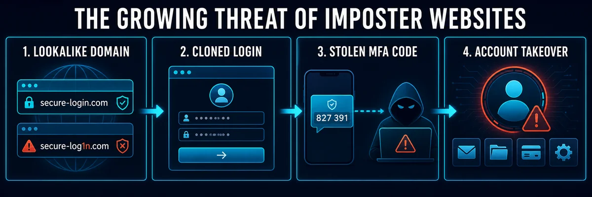
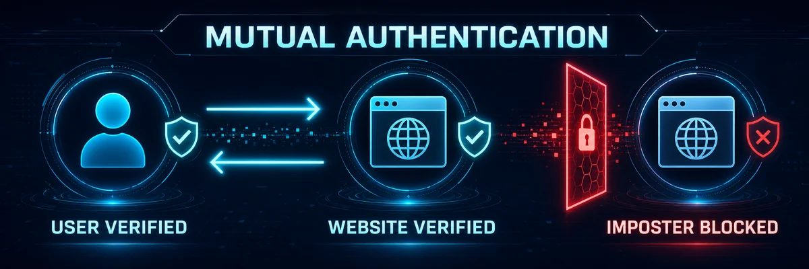
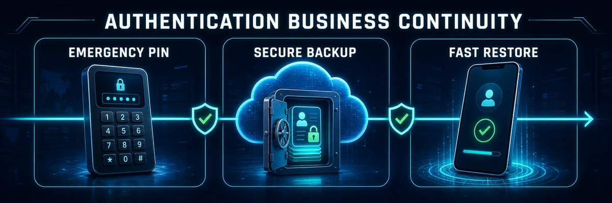

Why Imposter Websites Are One of Cybersecurity's Fastest-Growing Threats—and How Mutual Authentication Stops Them

Imagine receiving an email from your bank asking you to verify your account.
The logo is correct.
The colors match.
The website looks identical to the real thing.
The URL even appears legitimate at first glance.
Without thinking twice, you enter your username, password, and authentication code.
Only later do you discover you never logged into your bank at all.
You handed your credentials directly to a cybercriminal.
This is no longer an isolated attack.
It's one of the fastest-growing threats facing businesses and consumers today.
Cybercriminals are creating imposter websites, lookalike domains, and brand impersonation sites specifically designed to fool users into believing they're interacting with a trusted organization. These sites often differ from the legitimate domain by only a single character, a different top-level domain (.net instead of .com), a hyphen, or a visually similar Unicode character. Their success depends on exploiting human trust—not sophisticated technical exploits. Cisco Blogs
The unfortunate reality is that even traditional Multi-Factor Authentication (MFA) may not protect users if they're authenticating to the wrong website.
The future of authentication isn't simply verifying the user.
It's verifying both the user and the website.
What Is Full Duplex Authentication® (FDA)?
Full Duplex Authentication® (FDA) is the patented authentication technology powering PasswordFree®, Identité's Software-as-a-Service (SaaS) authentication platform, and NoPass™, its enterprise Platform-as-a-Service (PaaS) solution.
Unlike traditional authentication, which focuses almost exclusively on proving the user's identity, Full Duplex Authentication® performs mutual authentication. The user authenticates to the website and the website must authenticate itself to the user before access is granted.
Authentication powered by FDA is also designed for business continuity through Emergency PIN Authentication and Secure Backup & Restore, allowing users to recover authentication profiles in minutes while maintaining strong security.
This mutual authentication capability fundamentally changes the security model.
Instead of asking only:
"Is this the correct user?"
FDA also asks:
"Is this the legitimate website?"
The Growing Problem of Imposter Websites

Cybercriminals have discovered something important.
It's often easier to fool people than it is to hack systems.
Rather than attacking well-defended corporate infrastructure, attackers simply build convincing copies of legitimate websites.
These fraudulent sites may use:
Lookalike domain names
Typosquatted domains
Cloned login pages
Stolen company logos
Copied branding
Fake SSL certificates
Nearly identical user interfaces
Their goal is simple:
Convince users to voluntarily hand over:
Usernames
Passwords
MFA codes
Banking information
Personal information
Corporate credentials
Brand impersonation campaigns using lookalike domains have become increasingly sophisticated, relying on subtle domain variations and convincing cloned websites that are difficult for users to distinguish from legitimate sites. Organizations now monitor for typosquatted domains and fake websites because these attacks continue to grow in scale and effectiveness. Bolster AI
Why These Attacks Work
Most users don't carefully inspect every URL.
Attackers know this.
They register domains such as:
paypaI.com (capital "I" instead of lowercase "l")
micr0soft-login.com
amaz0n-support.net
companyname-login.com
On a mobile phone...
Under time pressure...
Or after clicking an email link...
The differences are almost impossible to notice.
The attack doesn't exploit software.
It exploits trust.
Research into lookalike domains shows these attacks are effective because people naturally recognize familiar visual patterns and often overlook subtle differences in domain names, especially when acting quickly. Infoblox
Why Traditional MFA Isn't Enough
Many organizations believe:
"We have MFA, so phishing can't hurt us."
Unfortunately, that's not always true.
Consider what happens during a typical phishing attack.
The user:
Visits the fake website.
Enters a username.
Enters a password.
Receives an MFA prompt.
Enters the one-time code.
The attacker immediately forwards that information to the legitimate website.
The legitimate site authenticates the attacker.
The user believes they've logged in successfully.
Traditional MFA verified the user.
It never verified the website.
That's the weakness attackers exploit.
The Missing Piece: Mutual Authentication

This is where authentication powered by Full Duplex Authentication® changes the equation.
Traditional authentication asks one question:
"Can the user prove who they are?"
FDA asks two:
Can the user prove who they are?
Can the website prove it is the legitimate destination?
Authentication only succeeds when both parties successfully authenticate one another.
This is known as mutual authentication, and it is one of the most effective ways to defeat imposter websites.
Why Imposter Websites Fail Against Full Duplex Authentication®
Here's what happens when an attacker clones a legitimate website.
They may successfully copy:
The graphics
The HTML
The branding
The login page
The user experience
But they cannot successfully complete their side of the mutual authentication process.
Because the fraudulent website cannot cryptographically authenticate itself as the legitimate service, Full Duplex Authentication® refuses to establish trust.
The imposter website fails.
The login never completes.
No credentials are surrendered.
No authentication session is established.
In other words:
The fake website can imitate your appearance.
It cannot imitate your identity.
That is a fundamental advantage over traditional password- and OTP-based authentication.
Beyond Phishing Resistance: Business Continuity

Strong authentication shouldn't only stop attackers.
It should also keep legitimate users working.
Authentication powered by Full Duplex Authentication® was designed around operational resilience.
Unexpected events happen.
Phones are lost.
Hardware fails.
Employees travel.
Authentication should continue working securely.
Emergency PIN Authentication
When organizational policy permits, authorized users can securely authenticate using an Emergency PIN when their primary authentication device is temporarily unavailable.
Employees continue working.
Attackers do not.
Secure Backup & Restore
Organizations using PasswordFree® or NoPass™ can enable Secure Backup & Restore.
Authentication profiles can be securely backed up to:
Secure cloud storage
Corporate network infrastructure
When a replacement device is available, users restore their authentication profile.
Most users are operational again in less than two minutes.
Business continues.
Choosing the Right Authentication Platform
Different organizations require different deployment models.
PasswordFree® — Cloud Authentication Without Compromise
Organizations seeking rapid deployment often choose PasswordFree®, Identité's Software-as-a-Service authentication platform.
PasswordFree® provides:
Passwordless authentication
Mutual authentication powered by FDA
Protection against imposter websites
Emergency PIN Authentication
Secure Backup & Restore
Simplified administration
Reduced help desk workload
NoPass™ — Enterprise Authentication Without Compromise
Organizations requiring greater control often deploy NoPass™, powered by Full Duplex Authentication®.
NoPass™ supports:
Microsoft Active Directory
Microsoft Entra ID
Microsoft 365 / Office 365
Microsoft Azure
On-premises deployment
Customer-controlled cloud environments
Integration with third-party authentication technologies, including compatible hardware security keys such as YubiKey®
Many financial institutions, healthcare organizations, government agencies, and other highly regulated enterprises choose NoPass™ because it combines enterprise identity integration with strong protection against modern identity attacks while allowing them to maintain direct control over authentication infrastructure.
How Individuals Can Protect Themselves
Even with modern authentication, users should remain vigilant.
Good security habits include:
Type important website addresses instead of clicking email links.
Verify domain names carefully before logging in.
Bookmark frequently used business websites.
Be cautious of urgent emails requesting immediate action.
Report suspicious websites to your IT or security team.
Adopt phishing-resistant, passwordless authentication whenever possible.
Technology and user awareness work best together.
The Identité Perspective
The cybersecurity industry has spent decades asking:
"How do we verify the user?"
That's only half the problem.
Attackers no longer focus exclusively on stealing passwords.
They build convincing fake websites and wait for legitimate users to authenticate themselves.
The next evolution of authentication is not simply stronger MFA.
It is mutual authentication.
That's the philosophy behind PasswordFree® and NoPass™, powered by patented Full Duplex Authentication®.
By requiring both the user and the website to authenticate one another, FDA eliminates one of the biggest weaknesses in traditional authentication.
Add Emergency PIN Authentication, Secure Backup & Restore, and passwordless identity verification, and organizations gain more than stronger cybersecurity.
They gain confidence that employees are connecting to the right systems, not just logging in securely.
Because in today's threat landscape, verifying the user is only half the battle.
You must also verify the website.